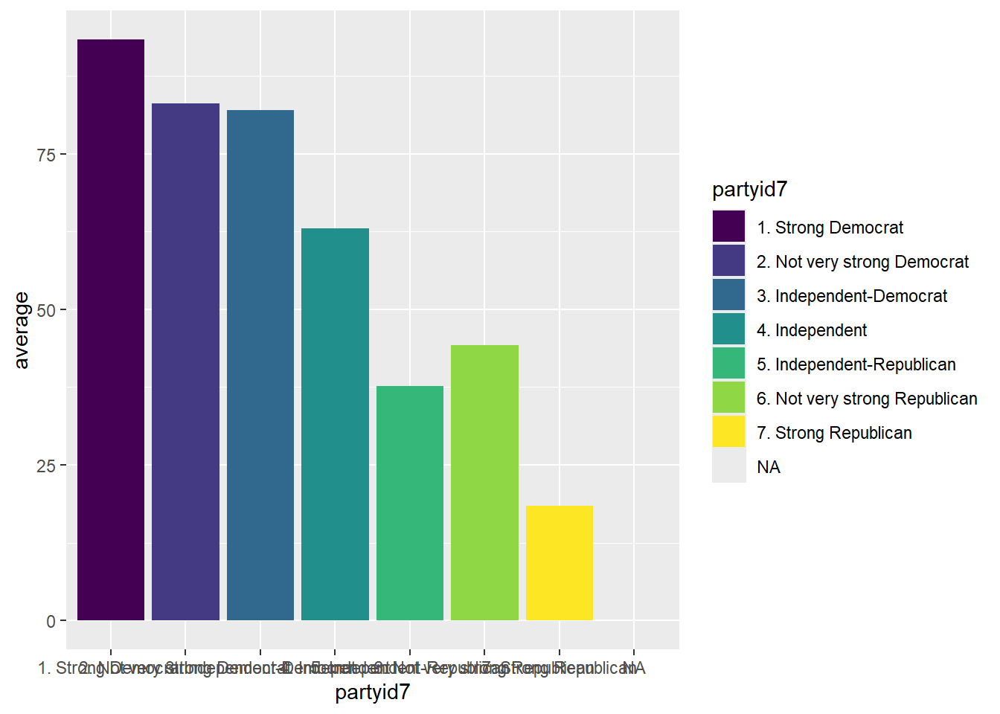

5.3 Make a Bar Chart for Two Variables
5.3.1 Problem
Make a barchart that plots the mean of a dependent variable (Y) by an independent variable (X).
5.3.2 Solution
- Create a summary dataset to plot.
- Use
ggplot()for the data and the mapping. - The data is the summary dataset,
data = sum_data - The mapping is
mapping = aes(x = independent, y = dependent) - If you want to color the bars, add
fill = independentto the mapping. - Use a
+at the end of the line of code. - Use
geom_col()to make the bar shapes.
# create a plot object set to `ggplot()`
p1 <- ggplot(
# specify the data as the name of your summary data
data = sum_data,
# specify the mapping
mapping = aes(
# set x to the name of the independent variable
x = independent,
# set y to the name of the dependent variable
y = dependent,
# set `fill` to the name of the independent variable
fill = independent)) +
# use `geom_col() to create the bars
geom_col()
# call the plot using the name of your plot object
p1Plot the mean feelings towards Obama obama_therm by party identification pid_x.
# create the summary dataset
# assign old data to a new data object
partymeans <- nes %>%
# use group_by() to group the data by partyid7
group_by(partyid7) %>%
# calculate the means of ft.obama
summarise(average = wtd.mean(ft.obama, na.rm = T,
w = wt))
# create a plot object set to `ggplot()`
p1 <- ggplot(
# specify the data as the name of your summary data
data = partymeans,
# specify the mapping
mapping = aes(
# set x to the name of the independent variable
x = partyid7,
# set y to the name of the dependent variable
y = average,
# set `fill` to the name of the independent variable
fill = partyid7)) +
# use `geom_col() to create the bars
geom_col()
# call the plot using the name of your plot object
p1
5.3.3 Troubleshooting
- Make sure that you use the summary dataset instead of the larger dataset.
- If there are errors in making the summary dataset, then there will be problems in the plot.
- Remember that the name of the dependent variable in the plot is the name that you created in the
summarise()when creating the summary data. - You need to load the
tidyversepackage.